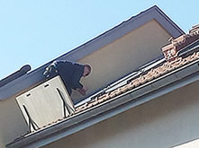
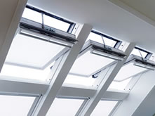
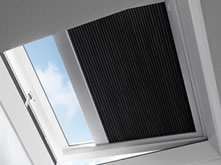
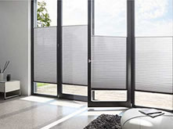

Ein Dachfenstereinbau will geplant sein und soll genau Ihren Vorstellungen entsprechen, damit Sie viele Jahre Freude daran haben. Deshalb gehen wir individuell auf Ihre Wünsche ein und beraten Sie kompetent und unabhängig.

Dachfenstereinbau oder -austausch
Unsere Kernkompetenz ist der Einbau und Austausch von Dachfenstern. Dank Fachwissen und langjähriger Erfahrung können wir Dachfenster nicht nur schnell einbauen und ersetzen, sondern auch in höchster Qualität und genau nach Ihren Wünschen.

Service
Mit dem fachgerechten Einbau oder Austausch eines Dachfensters ist unsere Arbeit nicht getan. Zwar verbauen wir nur qualitativ hochstehende Produkte, aber auch bei diesen können einmal Probleme oder Fragen auftauchen. Dann genügt ein Anruf und wir sind für Sie da!

Zubehör
Wir zeigen Ihnen gerne welches Zubehör für Sie sinnvoll ist. Wünschen Sie einen Insektenschutz oder eine intelligente Klimasteuerung? Wir haben das Richtige für Sie. Und wir empfehlen Ihnen auch die besten Pflegeprodukte, damit Sie lange Freude an Ihrem Dachfenster haben.

Faltrolladen und Sonnenschutz für Festverglasungen und Wintergärten
Sonnen und Sichtschutz ist viel mehr als eine Markise oder ein Plissee-Vorhang. Sonnenschutz gestaltet Licht und Raum und schafft damit Atmosphäre und Leben und das nicht nur bei Dachfenstern. Wir sind auch Ihr Partner, wenn es um die Montage von Markisen, Rollos und Plissee-Vorhängen an normalen Fenstern und Wintergarten-Verglasungen geht.
Wir montieren ausschliesslich Qualitätsprodukte der Firma MHZ Hachtel & Co AG. Hier erfahren Sie mehr zu unseren Produkten.
Rufen Sie uns an für eine unverbindliche Beratung.